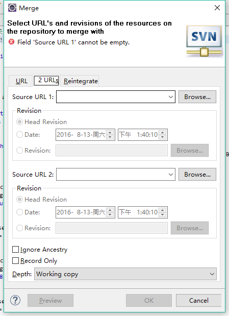

引言
本文将对Eclipse中SVN工具的功能提供使用帮助，并不从理论或者命令行的角度进行详解与分析。
准备工作
本文中的操作平台为Eclipse IDE for Java EE 4.5.1版本
安装svn插件
- 打开eclipse 的应用市集（Help -> Eclipse Marketplace…）
- 输入检索条件“svn”
- 选择需要的插件点击Install，并按提示完成安装
- 安装完插件，可能提示重启Eclipse。
- 推荐选择
Subversive - SVN Team Provider插件。
调出SVN Repository Exploring
点击 （默认位于Eclipse工具栏右侧）打开open perspective 窗口。选中SVN Repository Exploring并点击OK
个性化定制
以下属于可选操作，根据自己的习惯选择使用。
调出SVN菜单
Window → Perspective → Customize Perspective切换到Action Set Availability勾选SVN
类似的方法可以设置其他个性化视图风格，使Eclipse更顺手
功能
New Repository Location
新建一个远程SVN资源库连接。按弹出框提示填入对应的内容即可。一般仅须填写General选项卡。
位于SVN Repository Exploring
Check Out
检出。将远程SVN资源库中的某一位置复制到本地，并对其进行版本控制。默认检出目录为Eclipse的当前Workspace。
若本地存在相同名称的项目，将会提示覆盖当前项目。
Synchronize with Repository
与版本库进行同步。将会对比本地代码与版本库中当前分支HEAD版的代码。
Update
更新至当前分支的最新版本（HEAD）。
若要更新到自定义版本请点击
Update to Revision...
Commit
提交更改到当前分支。
强烈建议填写Comment，以便团队成员包括自己可以快速知道更改内容
Tag
标签。仅仅是一份快照，记录标记时刻的各个文件的版本。通常用于发布版本。
Branch
分支。用于团队并行开发以及新功能测试，能够避免代码冲突，不影响主干（用于生产环境的版本）上的代码。
建议：建立的分支路径及名称制定团队的统一规范，便于管理。
Switch
切换分支。将本地代码从当前分支切换到选定的分支。
Switch的url请务必选择与当前选定的目录级别相同的版本库目录，否则会失败。
Merge
合并分支
合并一个版本范围
将选择的url及版本合并到本地版本中，合并后的版本提交到本地版本所在的分支。
选项解释
- Revisions
- All：从版本库的第一个版本开始，合并所有修改
- Start from copy：从所选择的分支生成时的版本号开始，合并所有更改
- Revisions ：手动选择版本
- Reverse merge：逆向合并
- Depth：深度，操作等同于
checkout的深度- Only a folder：当前文件夹（不包括文件夹内文件）
- Files in a folder：当前文件夹中的文件
- Direct children：当前文件夹中的文件，及子文件中的文件
- Recursively：递归（选中的目录中所有的文件）
- Working copy：包含本修改过的文件
- Preview：预览产生影响的文件列表
url的选择
url路径须跟本地合并目录的级别一致，否则将导致出错。
合并两个不同的树
将第二个url版本的合并到第一个url的版本中，并将合并后的代码下载到本地手动解决冲突。

Reintegrate
将所选url的分支所做的更改，全部应用到本地版本的分支。本地版本所在分支的全部更改将被其覆盖。
Show History
显示SVN版本提交历史。可以查看选定的目录或文件在当前分支上的所有版本的更改记录。
在进行版本比较，代码追查的时候非常有用
Compare With
比较选定文件的本地副本版本与以下几种方式查找的版本之间的差异。右键菜单可调出。
Base from Working Copy：与修改前的本地版本Lastest from Repository：与版本库中当前分支的HEAD版本Revision or URL...：与指定的URL或RevisionBranch...：与指定的其他分支中HEAD版的同文件Tag...：与指定的Tag版本的同文件Each Other：选择2个文件时有效，比较选择的这2个文件
Cleanup
清理。当本地目录出现无法提交、文件版本冲突等问题，其中部分问题可以通过Cleanup解决。
设置选项详解
SVN的设置选项位于Preferences → Team → SVN
这里以
Subversive - SVN Team Provider插件为例
SVN-General
SVN-SVN Connector
SVN-Project structure
SVN-View Settings
SVN-Error Reporting
常用操作
提交更改
当前状态：完成自己的开发任务，准备提交更改到版本库。
点击
Synchronize with Repository，待系统操作完成切换到Team Synchronize。检视
Synchronize视图中列出的文件，确认要提交的文件。若有某些文件此次不想提交，可以选中右击
Remove from View，会暂时将此文件从当前清单中移除选中要提交的文件或目录，点击
Commit，提交到版本库。
将自己的开发分支Marge回主干
此场景适用于将更改合并回主干（trunk）或主开发分支（dev）
当前状态：当前工作目录位于自己的开发分支上，完成了开发任务。
提交当前的更改，完成后
Update到HEAD版本。选中当前要切换的项目根目录，点击
Switch按钮，打开Switch To弹框。选择URL到主干的路径，点击OK。待切换完成后进行下步操作。还是选择项目的根目录，点击
Merge按钮。切换到URL选项卡，选择要合并的分支的URL。一般建议合并整个项目的目录，以免遗漏合并更改过的代码。
Revision选择Start from copy，Depth选择Recursively。
此场景下选择
Start from copy（即分支创建的版本）最为适宜，可避免遗漏更改，也减少冲突的数量。选择Recursively的目的是避免本地目录尚未提交的文件影响合并。
点击
Preview，检视弹出的窗口中合并影响的文件，大致确认是否为自己修改。Preview可减少因操作失误导致的合并错误，影响效率和版本控制的可靠性。点击
OK，等待处理完成后自动切换到Team Synchronize。依次确认
Synchronize视图中所显示的更改，并手动处理冲突。几种冲突类型如下：Tree Conflicts：文件内容无变动，仅仅是分支产生的文件识别冲突。选中右击，选择
Edit Tree Conflicts。在弹出框中选择一种处理方式：- Incoming Changes
Conflicts：文件内容有冲突。选中右击，选择
Edit Conflicts。对比代码不同的地方，手动合并后保存。再选中当前文件，右击Mark as Merged。
解决全部冲突后，切换回
JavaEE Perspective，再选中当前项目的根目录，并点击Synchronize with Repository。此时确认变更后，即可Commit到版本库。
常见错误及解决
任何可以选择
Revisions的界面，所有通过Browse...按钮的操作都会出错
错误信息：Get Log Messages operation failed
解决方法：Preferences->Team->SVN切换到SVN Connector选项卡,去掉Show merged revisions的勾选